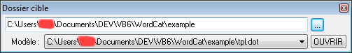

Aide de WordCat
Quel est le but de cette application ?
Je devais fusionner un grand nombre de fichiers Word situés dans des dossiers différents. Ces fichiers pouvaient être modifiés presque n'importe quand,
j'avais donc besoin d'un outil qui puisse automatiser leur fusion et c'est pourquoi j'en ai développé un (il n'en existait pas de gratuits à ma connaissance).
Il prend en compte l'ordre que vous définissez pour fusionner les fichiers, vous n'avez donc pas besoin d'utiliser des noms de fichiers bizarres pour organiser votre document final.
Avantages
- Vous pouvez ignorer une partie de l'arborescence : les fichiers et les dossiers avec un nom commençant par tiret sont ignorés.
- Les caractères non latins dans les documents Word sont bien sûr supportés.
Comment utiliser cette applicaion
- Sélectionnez un dossier cible et, si vous le souhaitez, un modèle situé dans le même dossier.:
- Utilisez les flèches pour déplacer vers le haut ou vers le bas le fichier sélectionné, ou utilisez le bouton avec l'icône A-Z pour les trier alphabétiquement:
- Une fois que vous êtes allés dans chaque dossier, utilisez le bouton Vérifier pour vérifier si tous les documents sont référencés.
- Si la vérification réussit, cliquez sur le bouton Lancer et sélectionnez la méthode que vous préférez. Le résultat sera enregistré dans un fichier nommé merge.doc dans la racine du dossier cible.
L'application l'ouvrira automatiquement pour vérification visuelle. Ne négligez pas cette étape avant une impression !
Bogues connus
Concaténer des fichiers avec des en-têtes et pieds de pages peut causer des problèmes.
Essayez alors de les supprimer via l'outil intégré (Outils → Supprimer en-têtes et pieds de pages) après avoir fait une copie de sauvegarde...
Ce bug est en fait issu de la mauvaise gestion de Word, je ne peux malheureusement rien y faire.
Améliorations futures
- Ordonner via sélections multiples
- Supporter les paramètres en ligne de commande (avec code de retour)
- Outil de conversion en masse (.docx vers .doc ou vice versa)